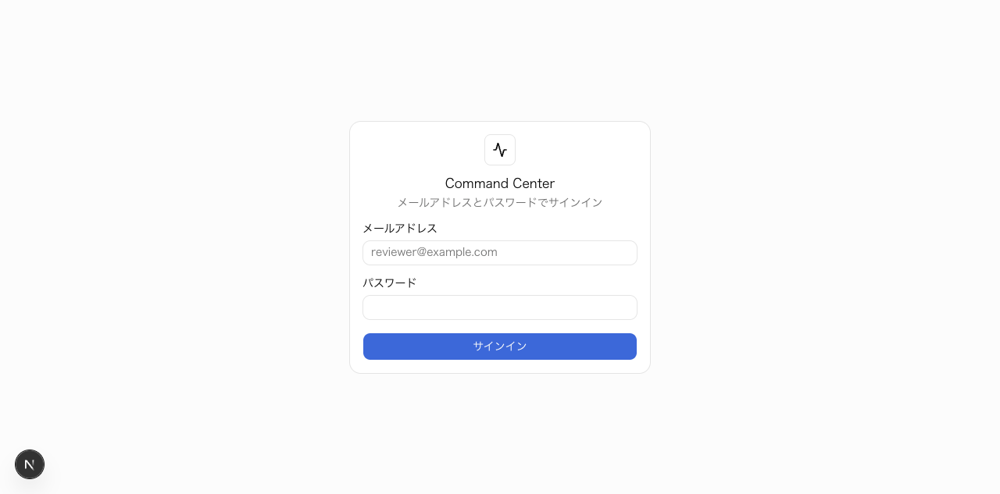
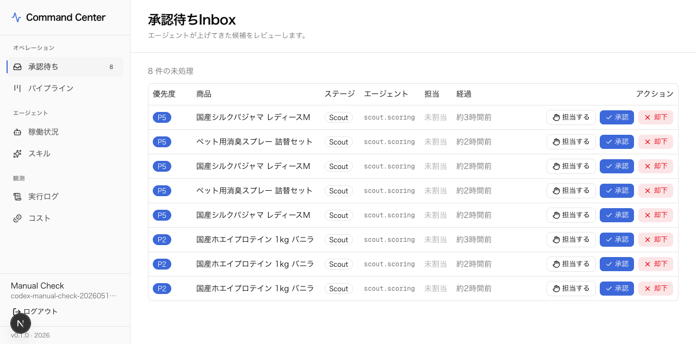
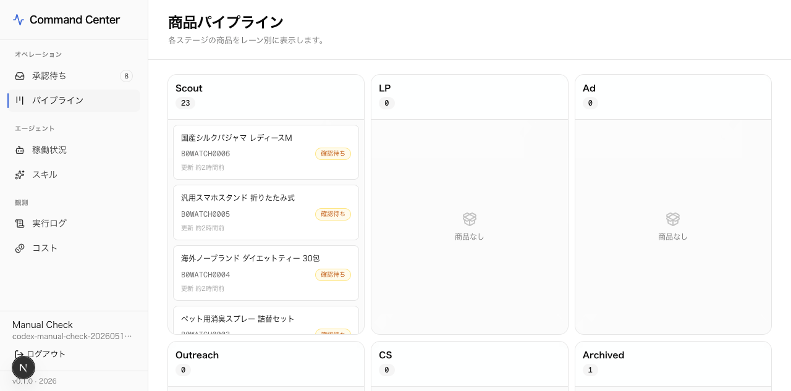
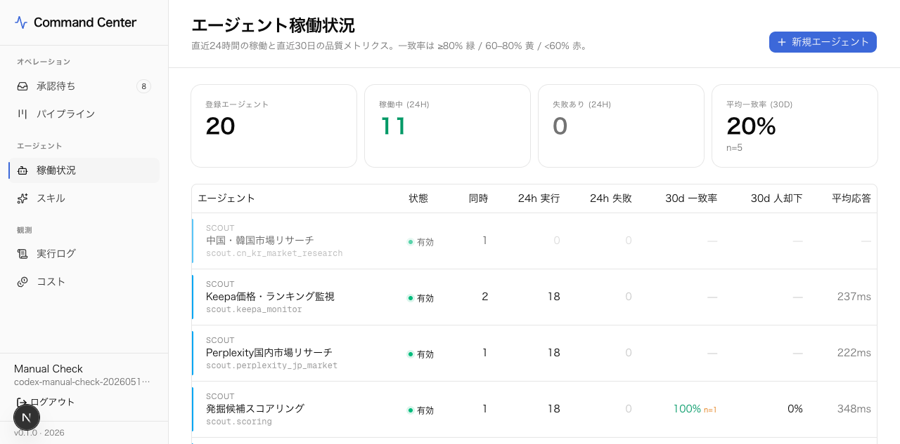
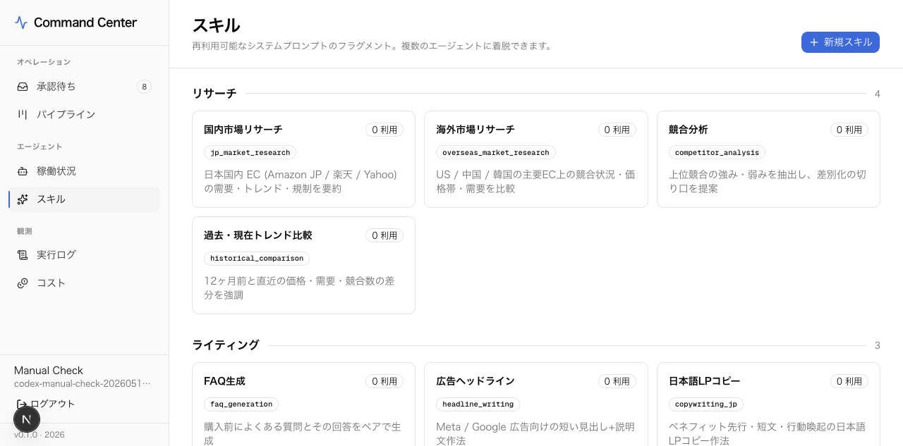
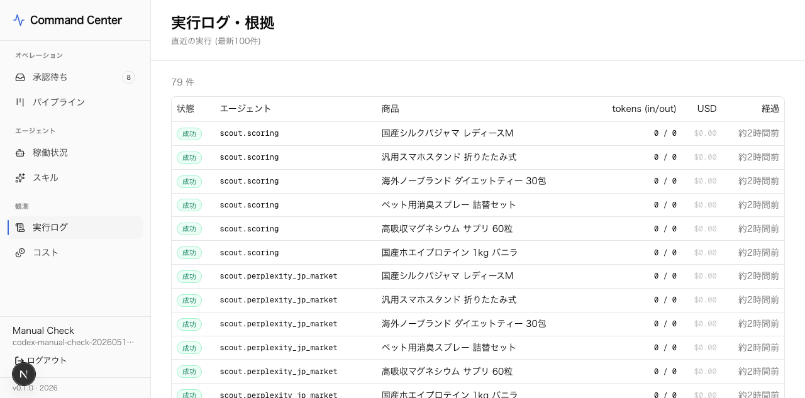

Agent Command Center 運用マニュアル
System 1〜5 のAIエージェント運用を、人間レビュー・稼働監視・コスト管理まで含めて引き継ぐための手順書です。
先に結論
フロントUIとしてサーバーへ上げる対象は、基本的に
agent-command-center フォルダだけで足ります。ただし、フォルダ単体では運用できません。
Supabase、環境変数、DBマイグレーション、Authユーザー、常駐プロセス設定が別途必要です。
| 今回見た環境 | http://localhost:3000 の稼働中Next.js dev server。 |
|---|---|
| 現データ | 承認待ち8件、商品24件、登録エージェント20件、スキル12件、実行ログ79件。 スクリーンショットはこの現環境から撮り直しています。 |
| フォルダに含めるもの |
src、public、drizzle、scripts、
package.json、pnpm-lock.yaml、next.config.ts、
drizzle.config.ts、tsconfig.json、components.json。
|
|---|---|
| フォルダ外で必要なもの | Supabaseプロジェクト、Postgres接続文字列、Supabase Authユーザー、サービスロールキー、APIキー原本、PM2またはlaunchdなどの常駐設定。 |
| 上げないもの |
node_modules、.next、.env.local、ログ、個人PC固有のキャッシュ。
秘密情報はサーバー側の環境変数として設定します。
|
| 注意 | 24/7のエージェントワーカー本体は、現状このUIとは別プロセスとして設計する前提です。 UIは人間レビューと監視の司令塔で、定期実行キューはまだBullMQ/Redis等で常駐化する余地があります。 |
目次
- システム全体像
- 初回セットアップ
- サーバー常駐化
- ログインと日常オペレーション
- 承認待ちInbox
- 商品パイプライン
- エージェント管理
- プロンプトとスキル管理
- スキル管理
- 実行ログとコスト確認
- 障害時の確認手順
- 引き継ぎチェックリスト
システム全体像
Agent Command Center は、候補商品の発掘からLP、広告、仕入れ連絡、CS返信までをAIが下書きし、 人間が承認・却下するための管理UIです。AIは調査・生成・一次判定を担当し、人間は公開判断、送信判断、例外対応を担当します。
| System 1 Scout | 商品候補の収集、Keepa/SellerSprite/市場調査、スコアリング。 |
|---|---|
| System 2 LP | LPコピー、FAQ、画像案、コンプライアンス確認。 |
| System 3 Ad | 広告見出し、説明文、訴求軸の生成。 |
| System 4 Outreach | 海外メーカー・仕入れ先への連絡文面作成。 |
| System 5 CS | 問い合わせ分類、返信テンプレ、エスカレーション案。 |
| Command Center | 承認キュー、商品ステージ、稼働状況、実行ログ、コストを一元管理。 |
初回セットアップ
1. 必要ソフト
- Node.js 22系、またはNext.js 16が対応するNode.js 20.9以上
- pnpm 10系
- Git
- Supabaseプロジェクト
2. 依存関係を入れる
cd agent-command-center pnpm install
3. 環境変数を設定する
サーバーでは .env.local を直接共有せず、ホスティング環境またはサーバーの環境変数に設定します。
NEXT_PUBLIC_SUPABASE_URL=... NEXT_PUBLIC_SUPABASE_ANON_KEY=... SUPABASE_SERVICE_ROLE_KEY=... DATABASE_URL=... DATABASE_POOL_URL=... LLM_PROVIDER=mock
DATABASE_URL はマイグレーション用のDirect接続、DATABASE_POOL_URL
はNext.js実行時のPooler接続に使います。Supabase Dashboardの最新表示を正としてください。
DB初期化とユーザー作成
1. スキーマ反映
pnpm db:push
本番運用では、生成済みマイグレーションを順番に適用する pnpm db:migrate を優先します。
初回検証環境では db:push が早いです。
2. RLSポリシー適用
pnpm db:apply-rls
認証済みレビュアーがUIに必要なテーブルを読み書きできるようにします。 service role はワーカーや管理スクリプト用で、ブラウザには出しません。
3. 初期データ投入
pnpm db:seed pnpm db:seed-prompts pnpm db:seed-skills
4. ログインユーザー作成
pnpm user:create reviewer@example.com '強いパスワード' 'Reviewer Name'
別の担当者へ渡す場合は、メールアドレスごとにユーザーを作成します。退職・担当変更時はSupabase Auth側で無効化または削除します。
ビルドと常駐化
手動起動
pnpm build pnpm start
PM2で常駐
pnpm add -g pm2 pm2 start "pnpm start" --name agent-command-center pm2 save pm2 status
確認コマンド
pnpm lint pnpm build curl -I http://localhost:3000/login
外部公開する場合は、NginxやCloudflare TunnelなどでHTTPS化し、Supabase AuthのリダイレクトURLにも本番URLを登録します。
ログイン
Supabase Authのメールアドレス・パスワードでログインします。未ログインの状態で内部画面へアクセスすると
/login にリダイレクトされます。

承認待ちInboxの使い方
/inboxを開きます。- 優先度、商品名、ステージ、担当エージェントを確認します。
- 自分が処理するものは「担当する」でクレームします。
- 内容を確認し、問題なければ承認、問題があれば却下します。
- 却下時は理由を必ず書きます。理由は次回のプロンプト改善に使います。
同じ承認アイテムを複数人が同時処理しないよう、assigned_to と
decision の条件で排他制御します。

商品パイプライン
/pipeline では、商品が Scout
LPAd
OutreachCS
Archived のどこにいるかを一覧します。
- 承認すると次ステージのエージェントが起動し、次の承認アイテムが作られます。
- 却下すると商品ステータスが
rejectedになります。 - 滞留している商品は、該当ステージの承認待ちやエラーを確認します。

エージェント稼働状況
/agents では、登録済みエージェント、24時間の実行数・失敗数、30日の人間判断との一致率を確認します。
- 失敗数が増えているエージェントは
/runsでエラーメッセージを確認します。 - 一致率が低いエージェントは、プロンプト履歴や却下理由を見て改善します。
- UIから作成したdynamic agentは、専用TSファイルなしでテスト実行できます。

プロンプトとスキル管理
プロンプト改善
/agentsから対象エージェントを開きます。- 「プロンプト」タブで現在のアクティブ版を確認します。
- 改善案を新しいバージョンとして保存します。
- 必要なら保存後にアクティブ化します。
スキル
スキルは、複数エージェントで再利用できるプロンプト断片です。 法規制チェック、国内市場リサーチ、文面トーンなど、共通ルールを切り出す用途に使います。
pnpm db:seed-skills
UIでは /skills から作成・編集し、各エージェント詳細の「スキル」タブで着脱します。

実行ログ・根拠
/runs は、直近100件のエージェント実行を確認する画面です。
ステータス、対象商品、tokens、推計USD、エラーを追えます。
failedが出たらエラー文を確認します。- コストが急増したら、該当時間帯の実行数とtokensを確認します。
- 原因が外部APIの場合は、該当providerのキー・残高・レート制限を見ます。

コスト確認
/cost では、本日、今月累計、実行回数、tokensを確認します。
現状は agent_runs.cost_usd から集計します。
- 日次で本日コストを確認します。
- 月次でエージェント別に高コストな処理を確認します。
- 実LLM接続後は、provider別コストの分解を追加すると管理しやすくなります。

障害時の確認手順
| ログインできない |
Supabase Authにユーザーが存在するか、メール確認済みか、NEXT_PUBLIC_SUPABASE_URL
と NEXT_PUBLIC_SUPABASE_ANON_KEY が正しいか確認します。
|
|---|---|
| 画面がDBエラーになる |
DATABASE_POOL_URL、SupabaseのPooler設定、RLS適用、DBテーブルの有無を確認します。
|
| 承認後に次工程が動かない |
/runs の失敗ログ、LLM_PROVIDER、外部APIキー、ワーカー常駐状態を確認します。
|
| エージェントがmockしか返さない |
現状の実LLM providerは未実装です。LLM_PROVIDER=mock では決定論的なテスト出力になります。
本番AI出力にはAnthropic/OpenAI SDK実装とAPIキー設定が必要です。
|
| コストが0のまま |
mock providerではtokens/costは0です。実LLM接続後、usage値を finishRun へ渡します。
|
今回の欠陥チェック結果
確認済み
pnpm lint成功pnpm build成功- 主要DBクエリのスモークテスト成功
localhost:3000のブラウザ表示確認- マニュアル用スクリーンショット7枚を現環境から撮り直し
修正済み
- DBクライアントを遅延初期化し、ビルド時の環境変数事故を避けるよう変更
- 承認処理の同時押しで二重判定されにくい条件へ変更
- prompt/skill系テーブルにもRLSポリシーを適用対象化
- pnpmバージョンを
packageManagerに固定
残タスクは、実LLM provider実装、24/7ワーカー常駐化、外部APIキー・通知・バックアップ手順の本番確定です。 UI本体はビルド可能ですが、全自動運用にはこれらの周辺設定が必要です。
引き継ぎチェックリスト
- サーバーに
agent-command-centerを配置する。 - サーバー環境変数を設定する。秘密情報はチャットやGitに残さない。
pnpm installを実行する。pnpm db:migrateまたはpnpm db:pushを実行する。pnpm db:apply-rlsを実行する。pnpm db:seed、pnpm db:seed-prompts、pnpm db:seed-skillsを実行する。- レビュアーのログインユーザーを作成する。
pnpm buildが通ることを確認する。pnpm startまたはPM2で常駐させる。- ログイン、Inbox、Pipeline、Agents、Skills、Runs、Costを画面確認する。
- 実運用前にDBバックアップ、APIキー管理、障害時連絡先を決める。